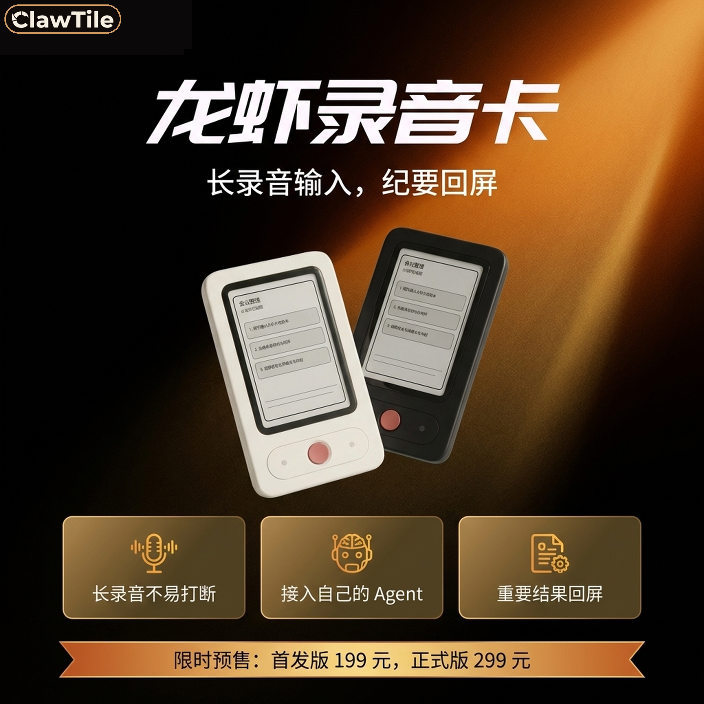
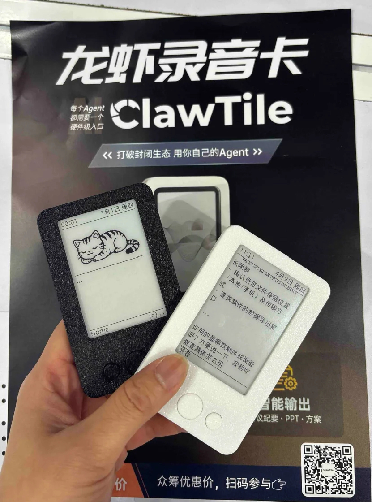
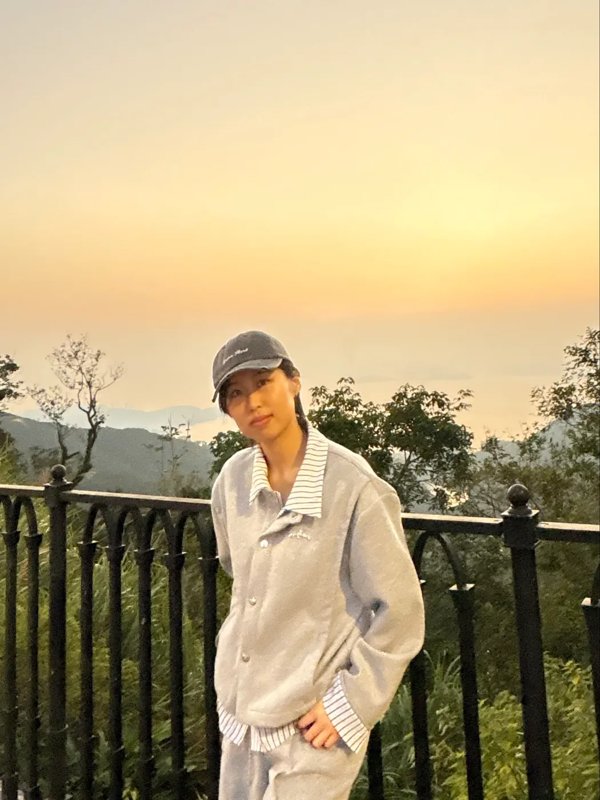
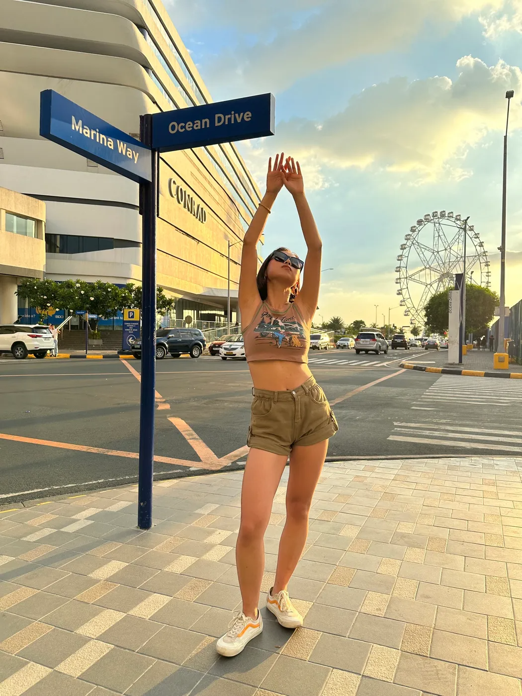
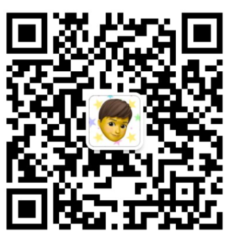
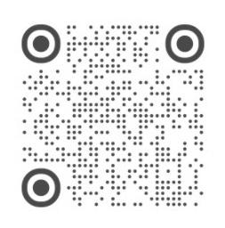
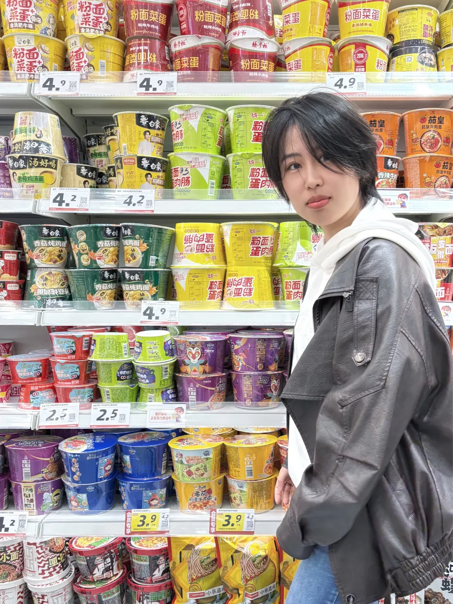
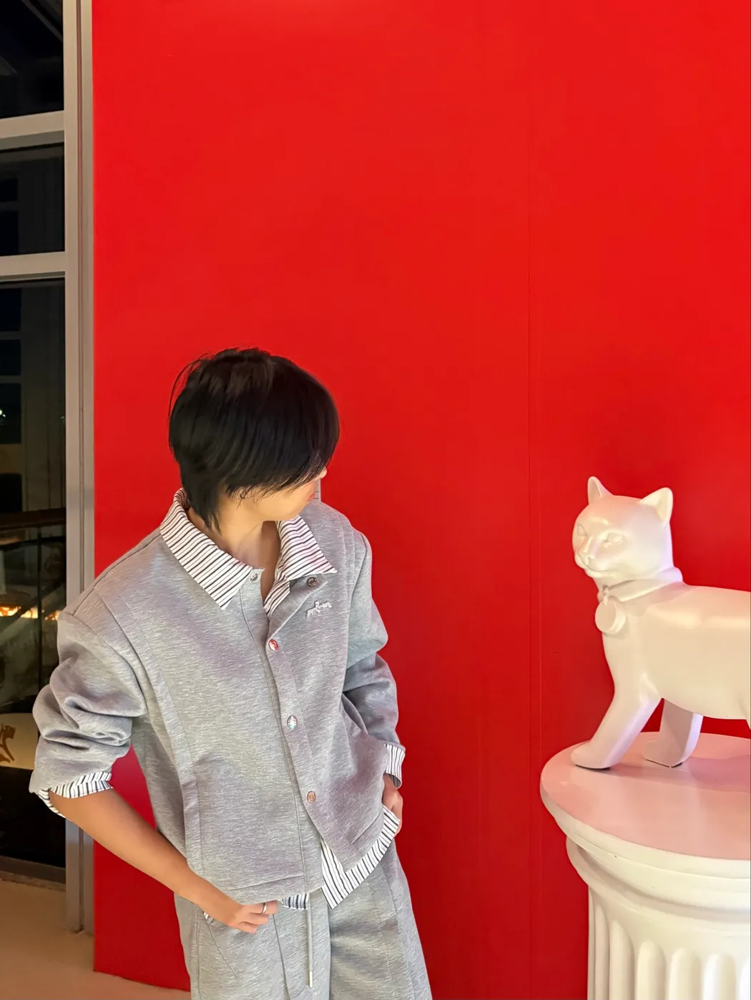
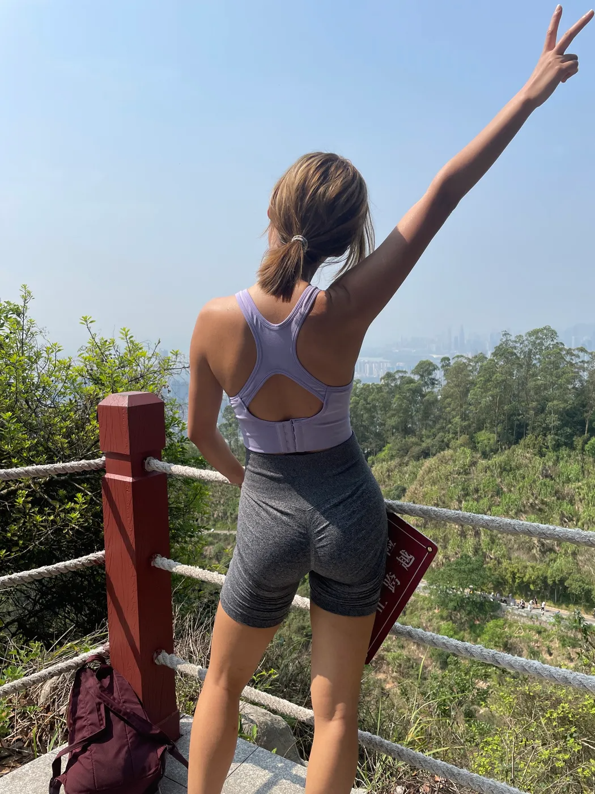

Featured Project
clawtile AI 硬件项目
一个面向长录音输入与结果回屏场景的 AI 硬件实验，让用户可以更自然地采集内容，再把结构化结果带回来。
- 我做了产品定义、概念表达和对外呈现。
- 重点不只是“做硬件”，而是把 AI 能力放进更顺手的使用路径里。
- 这个项目最能代表我把想法落成产品原型的能力。


AI Product / Community / Creative Tech
做 AI 产品，也认真创造和生活。
AI 硬件小龙虾录音卡 ClawTile 联合创始人，万人 AI 社群周周黑客松社群主理人， 前互联网大厂出海业务产品 / 项目经理。香港中文大学（深圳）金融硕士。


01 / About
我是多乐 Dolores，ENFJ。现在主要在做 AI 产品、内容实验和社群连接。 我喜欢把抽象的灵感落成具体的作品，也相信审美、判断力和行动力是同一件事的不同面。
经历上，我在 SHEIN 和 Lazada 做过出海业务产品，也在腾讯、美团、中金、德勤等环境里工作或实习过。 现在更关心的是：怎么把 AI 真正变成好用、好看、有人味的产品和体验。


02 / Life
人生是一场华丽而盛大的冒险。我喜欢有风的地方、带一点镜头感的日常， 也偏爱那些既有少年感，又有生命力的人和事。



03 / Projects
Featured Project
一个面向长录音输入与结果回屏场景的 AI 硬件实验，让用户可以更自然地采集内容，再把结构化结果带回来。


Community
除了做产品，我也长期在做社群组织和连接。周周黑客松对我来说，不只是活动，而是把有想法的人聚到一起，让行动发生。